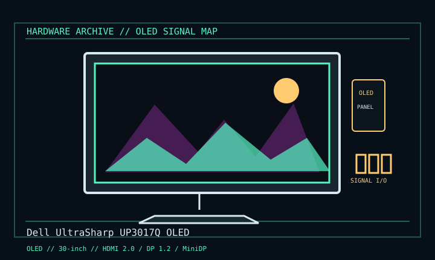

[ INDIVIDUAL COMPONENT // DISPLAYS ]
Dell UltraSharp UP3017Q OLED
Rare 30-inch 4K OLED professional display introduced mid-2010s. OLED

IDENTIFICATION: Verify the complete model/revision on the rear label. Specifications are tied to the cited manual/specification; variant-dependent values are qualified rather than generalized.
Specifications
| Catalog subcategory | Oled Displays |
|---|---|
| Exact product/family | Dell UltraSharp UP3017Q OLED |
| Era | Rare 30-inch 4K OLED professional display introduced mid-2010s. |
| Panel / image | 30-inch OLED, 3840 × 2160 at 60 Hz; 10-bit color capability is listed. |
| Inputs | HDMI 2.0, DisplayPort 1.2 and Mini DisplayPort 1.2. |
| Host | 4K60 bandwidth depends on port revision, cable, source and chosen color format. |
| Identity | Uncommon early desktop OLED product; do not conflate with LCD UltraSharp UP3017. |
Revision, signal & host compatibility
Verify full UP3017Q name, serial and firmware; product is distinct from LCD UP3017. Match host/cable and color-depth/chroma to interface bandwidth. Do not infer USB-C video or charging from unrelated UltraSharp products.
Match source signal type, sync/timing, connector pinout, bandwidth and power path to this exact display. Physical connector fit alone does not establish electrical or timing compatibility.
Preservation & repair notes
OLED ageing is cumulative; document hours, brightness and retention, limit static high-luminance content, and follow Dell panel-care guidance. Preserve original power accessories; panel repair is specialist work.
Record model suffix, serial/date label, accessories, image condition, configuration, source document and repair history. CRT high-voltage, LCD backlight and OLED panel risks require appropriate service training and the correct manual.
Manufacturer manuals & references
- Dell UltraSharp UP3017Q User’s GuideModel inputs, modes and handling reference.
- Dell UP3017Q Product SupportManufacturer manual and product-specific support portal.